🏠 Prožívání · Dashboard
Tři obrazovky, jeden systém
Sdílená architektura, různá rozlišení. Každá varianta optimalizovaná pro jiný fyzický kontext — od kiosku v předsíni po pracovní monitor.
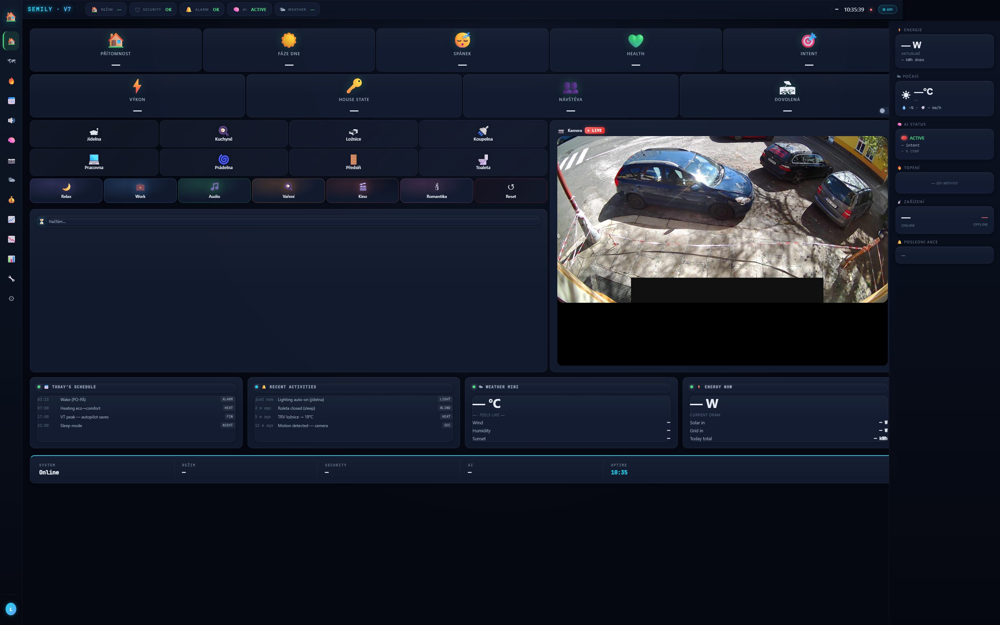
Master 32" monitor
2880 × 1800 (16:10). Plná verze pro pracovnu — všech 14 stránek, full sidebar, detail zón a real-time grafy.

14" notebook
1920 × 1080 (16:9). Mobilní varianta pro práci kdekoli v bytě — sidebar collapses na 64px pod 1280px.
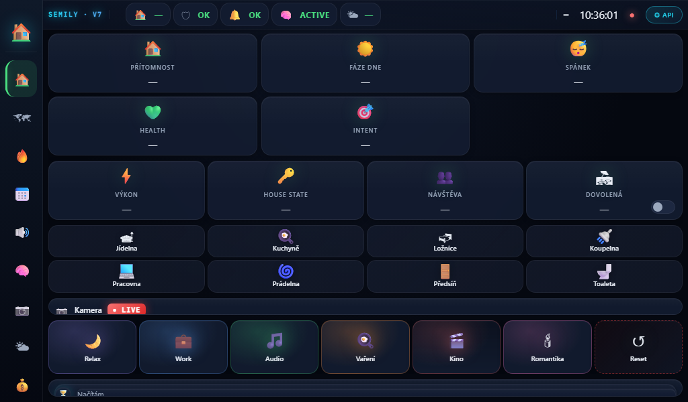
RPi kiosek
1024 × 600 (WaveShare 10.1"). Vždy zapnutý touch kiosek. Compact 4-col grid, 8 zúžených stránek, větší dotykové cíle.
Co dashboard ukazuje
Screenshoty výše jsou reálné záběry z dashboardu v provozu — stejné HTML/CSS/JS, různé viewporty. Live verze běží lokálně přes Homey REST API a není přístupná zvenčí — to je záměr.
Phase E cache fallback — kiosek 14.5.2026
Od 14. května má RPi kiosek (1024×600 v předsíni) chytřejší způsob, jak data získávat. Místo přímého polování Homey REST teď používá třístupňový fallback chain:
- Cache JSON na RPi/HAOS — Python service na HAOS každou minutu
přepíše čerstvý
/local/smart-home/dashboard-data.jsonz Homey, kiosek si ho po LAN proxy přečte za pár milisekund. - Přímé Homey REST — pokud cache selže, fallback na klasické
volání
/api/manager/logic/variable, zachová původní funkčnost. - localStorage last-good — pokud i Homey nedostupný, kiosek ukáže poslední úspěšně načtená data + viditelně oznámí, že jsou stará.
V pravém horním rohu kiosku se objevil malý badge v jedné z pěti barev:
- ● CACHE — data čerstvá, vše OK
- ◐ CACHE OLD — data starší než 5 minut, ale funkční
- ○ HOMEY — cache selhal, čte se přímo z Homey
- ○ LOCAL — i Homey nedostupný, ukazují se uložené hodnoty
- ✕ ERR — všechny tři vrstvy selhaly
Pro uživatele to znamená jediné: dashboard se nikdy nezasekne na blank screen, ani když Homey má rušnou chvíli. A pokud něco není v pořádku, badge to řekne nahlas.
Stránky dashboardu
Co vidíš na jednotlivých záložkách
Záběry z 1920×1080 verze (notebook). Master 2880 a RPi varianty mají stejný obsah, jen jiný layout.
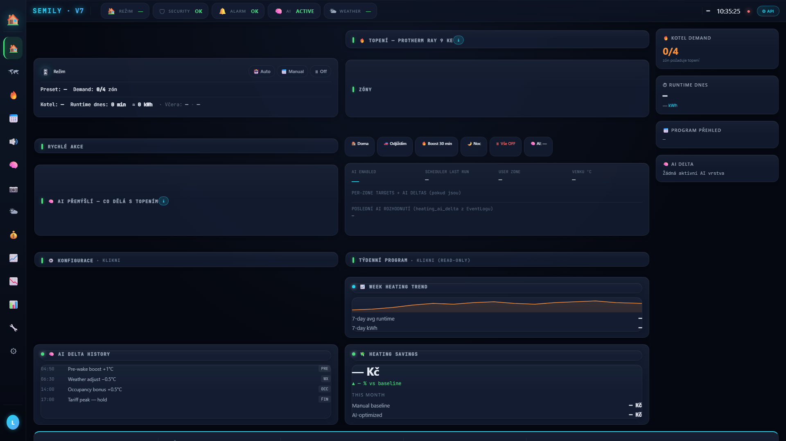
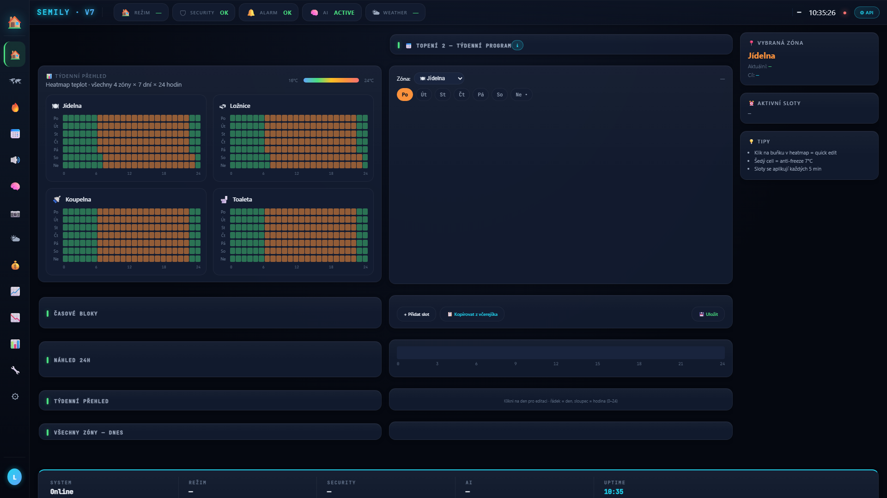
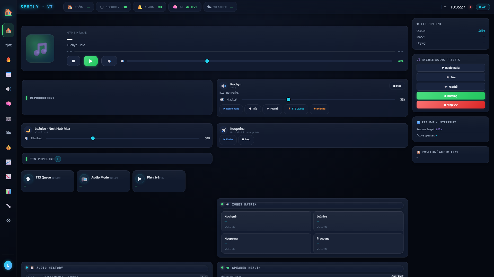

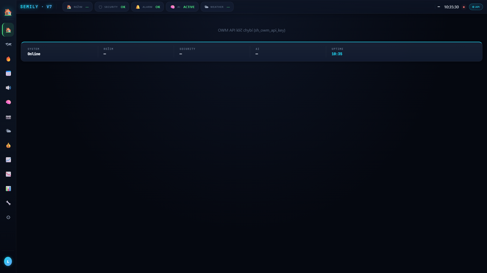

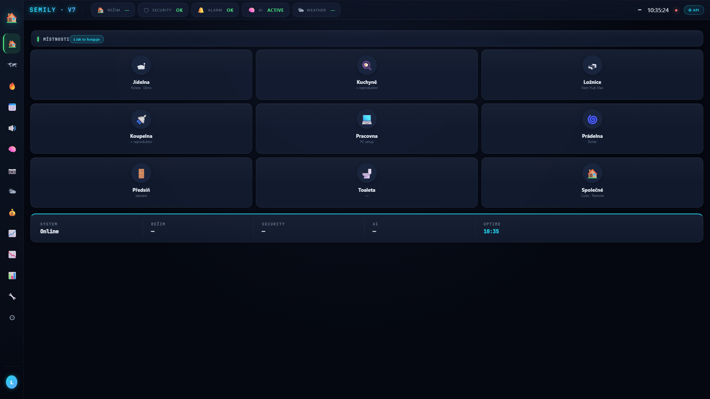
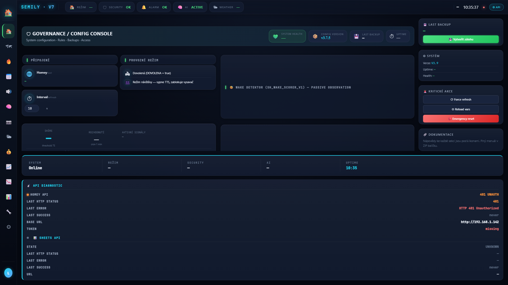
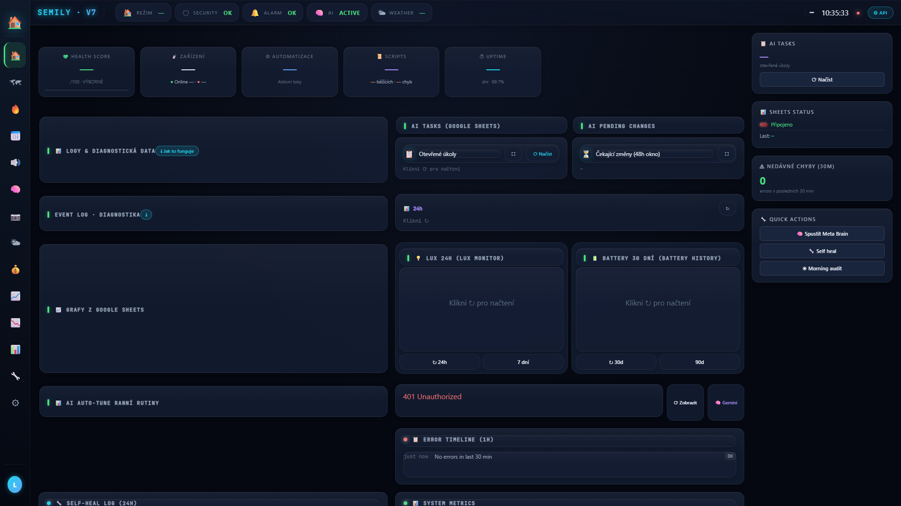
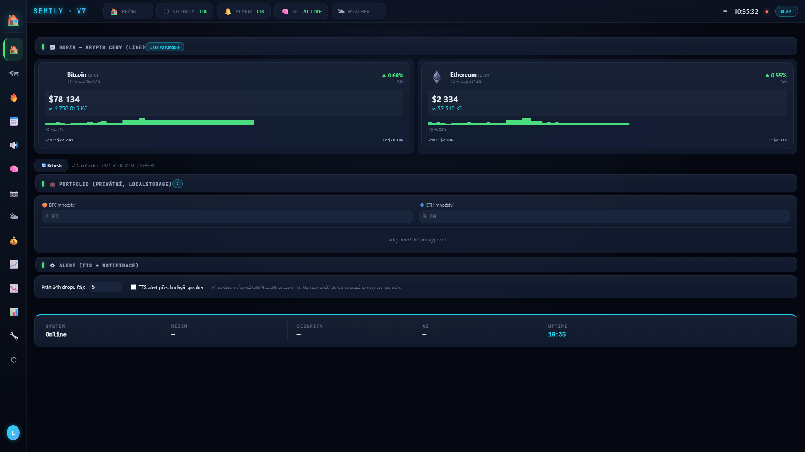
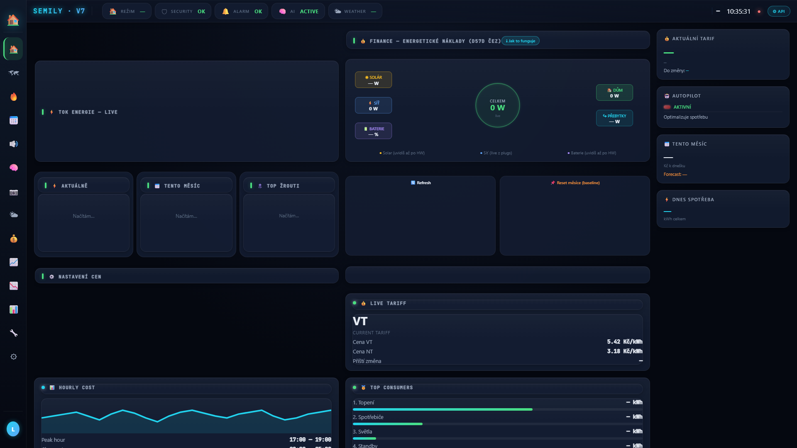
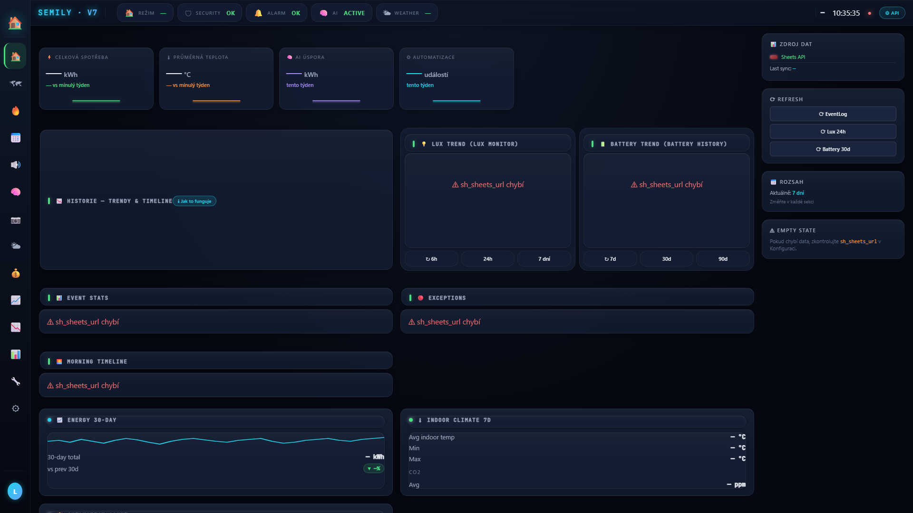
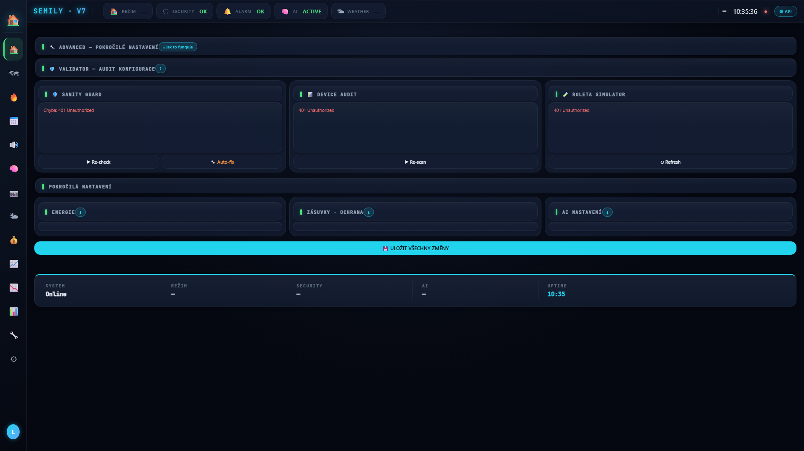